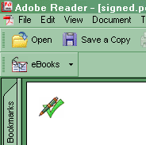

web site.
AspEncrypt is a comprehensive cryptographic engine which, among
other things, offers PKCS#7 digital signing functionality
and provides programmable access to X.509 certificates.
Using AspEncrypt, a signer certificate can be retrieved from a certificate store or .PFX file (also known as a PKCS#12 file).
Click here
for more information about AspEncrypt's certificate management functionality.
IMPORTANT: You must use Version 2.2.0.2 or higher of AspEncrypt
to produce signed PDF documents. If you are currently running
an older version, download your free upgrade here.
8.3.2 Sign Method
The Sign method expects an initialized instance of CryptoMessage,
an AspEncrypt object responsible for PKCS#7 digital signing.
The CryptoMessage object must be associated with an instance of CryptoCert,
another AspEncrypt object representing a signer certificate.
CryptoCert objects are obtainable from certificate stores (represented by
the CryptoStore object).
The Sign method also accepts the signer name, reason for signing, and location
arguments (the first one is required, the other two are optional),
and also an optional parameter string or parameter object controlling the
visibility and location
of the signature field within the document.
The following code sample adds a signature to a PDF document based
on a certificate in .pfx (PKCS#12) format:
...
Set CM = Server.CreateObject("Persits.CryptoManager")
Set Context = CM.OpenContext("", False)
Set Msg = Context.CreateMessage
CM.RevertToSelf ' to avoid a run-time error
Set Store = CM.OpenStoreFromPFX("c:\mycert.pfx", "mypassword")
Set Cert = Store.Certificates(1)
Msg.SetSignerCert Cert
Doc.Sign Msg, "John Smith", "I created this document.", "New York, NY"
...
If a signer certificate is located in a system certificate store (as opposed
to .pfx), the code fragment responsible for obtaining a CryptoCert
object would look as follows:
...
Set Store = CM.OpenStore("MY", True) ' or False
Set Cert = Store.Certificates("112B 0783 8D43 0887 4EDF 015B CF4E E109")
...
This fragment opens the "MY" store (containing personal certificates)
located in the HKEY_LOCAL_MACHINE section of the registry
(HKEY_CURRENT_USER would be used if False were passed to OpenStore),
and obtains a certificate from the store by its serial number.
Obtaining a certificate from a PFX file is conceptually simpler,
but is associated with some technical problems.
The method OpenStoreFromPFX uses an undocumented CryptoAPI function PFXImportCertStore
from the library Crypt32.dll. For this method to work under IIS 5.0/6.0, you must call
CM.RevertToSelf prior to calling OpenStoreFromPFX, and your virtual directory's
Application Protection option must be set to Low. Otherwise you will receive
the error
Persits.CryptoManager.1 (0x800A0064)
The system cannot find the file specified.
In ASP.NET, the method CM.RevertToSelf does not seem to have any effect,
and you must instead use
CM.LogonUser with an Admin username and password.
The code sample 08_sign.asp (not shown here) is yet another version of our Hello World
application. It generates documents that are both encrypted and digitally signed.
Before running this code sample, make sure AspEncrypt (the latest version)
is installed, and the virtual directory /AspPDF
has the Application Protection option set to low.
It is recommended that Acrobat Reader 6.0+ be used to view digitally signed documents.
Acrobat 5.0 (the full version, not the Reader)
is also acceptable, but you must also download and install the
VeriSign Document Signer
plug-in, and only signatures based on VeriSign certificates seem
to be recognized as valid by this plug-in. A free 60-day
VeriSign certificate can be obtained here.
Click the link below to run this code sample:
http://localhost/asppdf/manual_08/08_sign.asp
NOTE: A digitally signed document can only be saved to disk (via the Save method).
Saving to memory or an HTTP stream cannot be used once Sign
is called, and an attempt to call SaveToMemory or SaveHttp will result
in an error exception.
8.3.3 Visible Signatures
By default, the Sign method creates an invisible signature.
Using the last optional argument of the Sign method, it is possible
to specify a page and location within that page where the signature
icon is to appear.
The following code fragment draws a signature icon in the upper-left
corner of the first page of the document (middle arguments omitted for brevity):
Doc.Sign Msg, ..., "visible=true;x=10,y=750;width=20;height=20;pageindex=1"

It is also possible to change the default appearance of a signature
by drawing on the canvas of a PdfAnnot object
returned by the Sign method. Annotations are described in detail
in Chapter 10.
8.3.4 Signature Validation
AspPDF's digital signature functionality would not be complete without
a way to verify an existing signature in a document.
Signature verification is implemented via the VerifySignature method
of the PdfDocument object.
VerifySignature can only be called on an instance of PdfDocument
created via OpenDocument (the latter
is described in detail in Chapter 9.)
VerifySignature expects an empty CryptoMessage object as an argument.
VerifySignature returns Nothing if no PKCS#7 signatures
are found in the document. Otherwise, it returns an instance
of the PdfSignature object
encapsulating various property of the signature, including
its validation status (valid/invalid), signer name, reason for signing,
location, and other information. If a document contains multiple signatures (such as, when
an already signed document was signed again), the VerifySignature method
validates and returns the one that covers the largest portion of the document,
which is usually the latest signature.
The following code fragment opens a PDF document from a file,
and attempts to validate a signature, if one is present:
Set CM = Server.CreateObject("Persits.CryptoManager")
Set Context = CM.OpenContext("", False)
Set Msg = Context.CreateMessage
Set Doc = Pdf.OpenDocument("c:\somefile.pdf")
Set Sig = Doc.VerifySignature(Msg)
If Sig Is Nothing Then
Response.Write "No signature found."
Else
Response.Write "Status = " & Sig.Status & "<BR>"
Response.Write "Name = " & Sig.Name & "<BR>"
Response.Write "Reason = " & Sig.Reason & "<BR>"
Response.Write "Contents = " & Sig.Contents & "<BR>"
End If